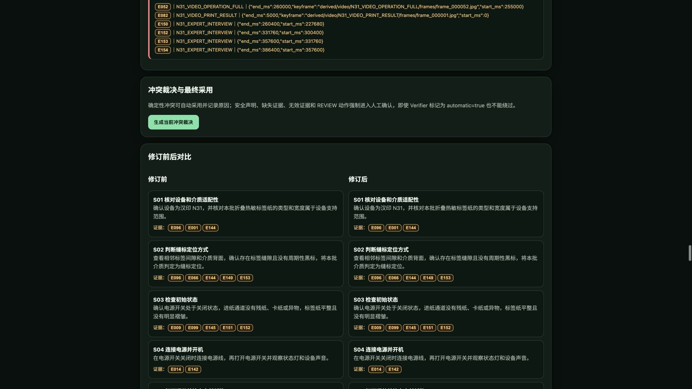
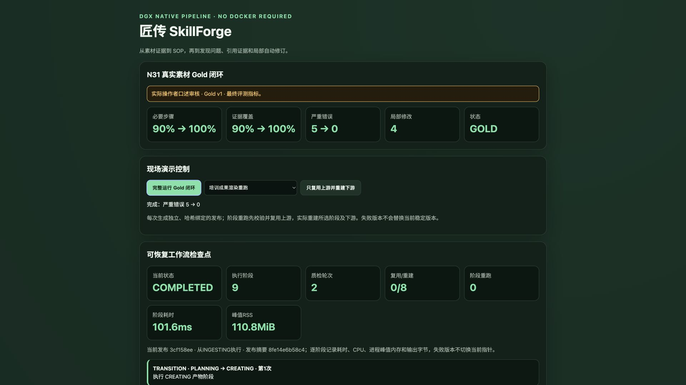
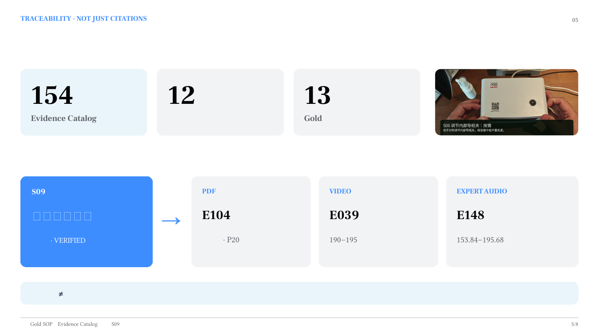

SkillForge 方法论系列 04/05 · 星星之火 · NVIDIA DGX SPARK 黑客松 2026
领导看完你写的方案，说："第三段逻辑有问题，第五段数据没来源，改一下。"
你打开文档，改了第三段和第五段。然后你想了想，觉得第二段措辞不够好，顺手优化了。第六段的格式不太统一，也调了。第七段有个错别字，改了。
改完发给领导。领导看了五分钟，皱眉："第二段怎么跟之前不一样了？第六段那个数据你动了没有？我记得之前不是这个数啊。"
你一看——坏了。"顺手优化"的时候，把没问题的地方也改了。领导现在不确定你改了什么、没改什么，只好把整篇重新看一遍。
本来只需要审两段，现在要审全文。你的"顺手"，把审核成本翻了五倍。
"全部重写"看起来是最彻底的修改方式，但它有三个致命缺陷：
第一，引入新错误。 重写时，模型（或人）会"顺手优化"没问题的部分。每一次"优化"都是一次未经审核的变更。改得越多，引入新错误的概率越高。你修了5个bug，可能顺手制造了3个新的。
第二，审核成本爆炸。 改了4个地方，审核者看4条修订记录就行。重写13步，审核者要重读全部13步——因为他不知道你"顺手"改了什么。审核成本从O(k)变成O(n)，k是实际问题数，n是总步骤数。
第三，无法追溯。 "为什么改？依据是什么？改前什么样？改后什么样？"——局部修订每条都有答案。整包重写没有。你没法向审核者证明"我只改了该改的"，因为你确实改了不该改的。
SkillForge 的修订策略只有一句话：哪里有问题改哪里，其余一个字不动。
这不是偷懒，是工程纪律。
真实案例：我们在操作者审核的Gold SOP副本中注入了5类受控错误（不在真实设备上制造危险操作）：
Verifier Agent 检测到5项严重问题。注意：它不是报告"质量不好请重写"，而是精确定位到哪个步骤、违反哪条规则、引用哪条证据。比如："第7步引用了'校准螺丝'，但当前步骤绑定的3条Evidence中没有任何一条提到该工具。"
Revision Agent 拿到问题清单后，执行4项局部修订：
复检结果：严重问题 5→0，必要步骤覆盖 90%→100%，证据覆盖 90%→100%。
怎么证明"只改了该改的"？我们做了选择性重建分析：

Web演示修订对比：红色标记问题、绿色标记修复，只改4处把修订前后的所有产出物逐项对比——13个步骤、5道测验题、15个视频镜头。结果：这4处修订只影响了7个步骤、1道题和7个视频镜头。其余6个步骤、4道题和8个镜头完全没变。
这不是"我们说没改就没改"，是逐字段哈希对比的结果。审核者可以只看那7个受影响的步骤，不需要重读全部13步。
对培训管理者来说，这意味着：修订不会引入新错误，审核成本可控。不是"AI改完了你信不信"，是"改了哪里、为什么改、改完对不对，全部摆在这里你自己看"。
每次修订保留完整审计记录：

现场重算完成：5项严重问题归零，4项局部修订在Web演示里，点一下问题编号，直接看到证据原文和修订前后对比。审核者逐条追溯"为什么改""凭什么改""改完对不对"。
整个闭环在演示中是完全透明的：发现问题→展示证据→执行修订→复检归零。不是"AI说改好了"，是"证据链完整，你自己验证"。
大模型有一个天然倾向：当你让它"修改第三段"时，它倾向于把整篇文章重新生成一遍。因为它的生成机制是"给定前文，预测下一个token"——修改局部内容意味着它需要精确地"跳过"不需要改的部分，这对自回归模型来说并不自然。

证据链示例：手册P20 + 视频190-195s + 口述153-195s 三源印证所以"局部修订"不能靠prompt实现。你不能在prompt里写"只改第三段，其他不要动"然后期望模型真的只改第三段。它可能"不小心"就把第二段的措辞也"优化"了。
SkillForge 的做法是在系统层面实现局部修订：Revision Agent 只接收"需要修改的步骤ID列表"，只对这些步骤执行修改操作，其余步骤直接从上一版本复制。不是"让模型重写然后对比差异"，是"从架构上保证不可能改到不该改的地方"。
不管是改文档、改代码还是改流程：
精准修改永远优于推倒重来。
具体操作：
把修订范围控制在最小，审核成本才能控制在可接受的范围。这不是偷懒，是对审核者时间的尊重。
改作文最蠢的做法，就是把整篇撕了重写。最聪明的做法，是只改病句，然后告诉审核者："我只改了这四处，依据在这里。"
SkillForge（匠传）· 团队：星星之火 · NVIDIA DGX SPARK 黑客松 2026 代码：github.com/sparklefire/SkillForge 数据：github.com/sparklefire/SkillForge/blob/main/cases/n31/demo_bundle/revision_audit.json 下一篇：《跑通一次叫Demo，跑通40次叫产品》——可复现方法论